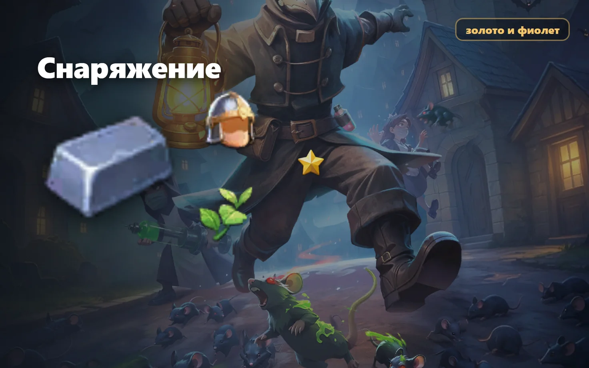
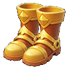
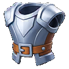
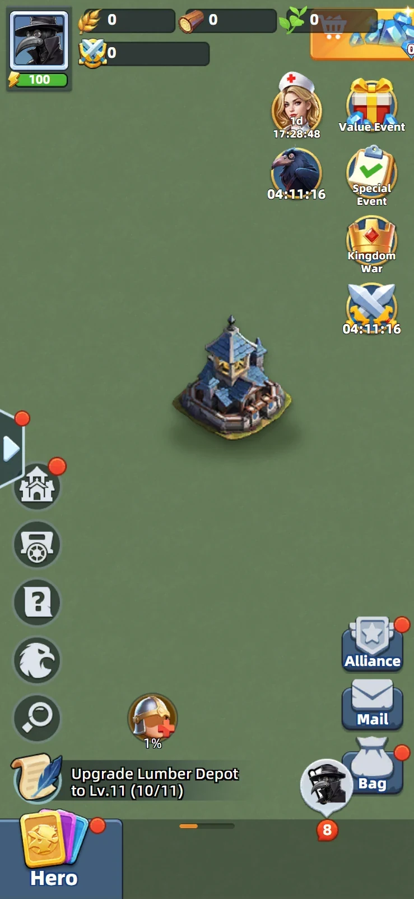
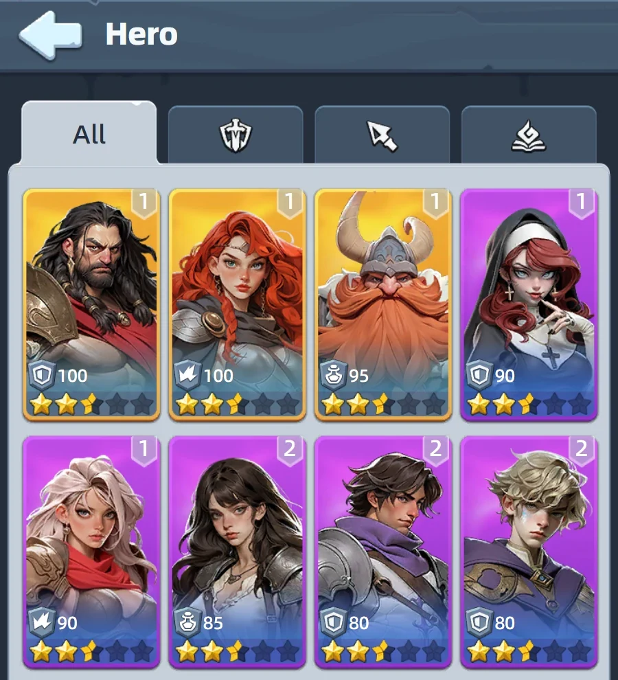
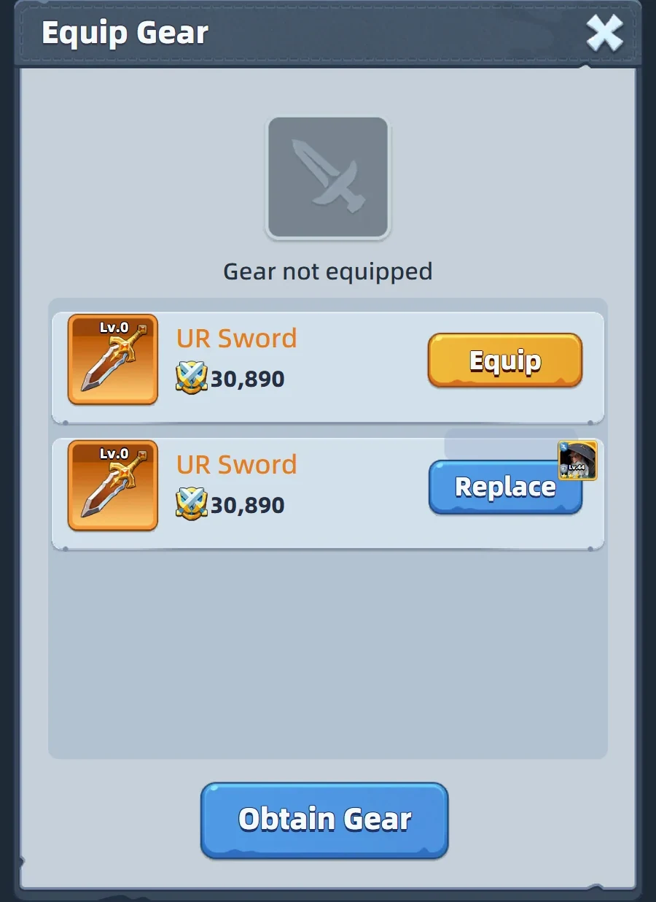
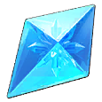
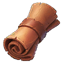
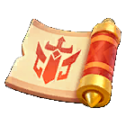

Hero gear
Hero gearGear: what to wear and why
In short: gold gear is your main gear, it is for fighting players. Purple is for monsters and Blight, because it has a special bonus against monsters. Below — why, with numbers, and how to keep two sets.


4 items per hero
Sword, armor, gauntlets, boots. Each item goes only into its own slot.

Gold — against players
Pure attack, defense, HP, crit and resistances. They work everywhere.

Purple — against monsters
At levels 10, 20 and 30 it gets +2% against monsters each time. At 30 — up to +6%.
Goal — level 40
After that the Herb cost grows 17-fold. First get your main items to 40.
Gear calculator
Pick an item and levels — the calculator counts how much Herb, Gearstone, steel and blueprints you need and how much Might and stats you gain. The cost is the same for all items of one rarity.
Loading numbers…
What each item gives
Sword
Attack and crit rate (a strong hit). The key item for damage heroes.
Armor
HP and physical damage resistance. The key item for tanks.

Gauntlets
Attack and resistance to all damage. For damage heroes — second after the sword.

Boots
Defense and energy damage resistance. For tanks — second after the armor.
Colors — from weak to strong


The Gear Workshop appears at Sanctuary 4 and cannot be higher than the Sanctuary. Stars for gold items unlock at Workshop 20. A gold item with 5 stars becomes the top rarity (MR) and gives +10% damage when your faction counters the enemy's.
Why gold gear is for players and purple for Blight
Every item has «special» levels: 10, 20, 30 (gold ones also 40). At them the item gets a bonus on top of the usual one. Purple and gold items get different bonuses:
| Item | Purple — at levels 10, 20 and 30 | Gold — at levels 10, 20, 30 and 40 |
|---|---|---|
| Sword | +2% damage to monsters each time | +250 attack, +2.5% crit, +250 attack, +2.5% crit |
| Gauntlets | +2% damage to monsters each time | +250 attack, +2% damage resistance, +250 attack, +2% |
| Armor |  −2% damage from monsters each time | +68,000 HP, +10% physical damage resistance… |
| Boots |  −2% damage from monsters each time −2% damage from monsters each time | +500 defense, +10% energy damage resistance… |
What it means in practice. A level 30 purple item = +6% against monsters. A gold one has no such bonus: its bonuses are general (attack, crit, defense), so they also work against players.

Why purple gauntlets beat gold ones on the boss. Part of gold gauntlets' power goes into «damage resistance», and the Demon King doesn't hit back — so it is useless. Purple ones give «damage to monsters», which is added at the very end of the hit calculation.
Rule: wear a purple item against monsters if its level is the same as or higher than the gold one's. If the gold one is much higher — keep the gold.
What goes on whom — for each case


After hitting, put your items back — otherwise you'll go to the arena and Kingdom War in purple.
How to re-equip a hero

Open «Hero»
The Hero tile at the bottom left of the main screen.

Pick a hero from the list
The Hero window opens with all your heroes. Tabs at the top: All and the three factions (Warrior, Ranger, Warlock icons). A card shows the rarity color, role icon, level and stars; the flag with a number at the top right shows which squad the hero is in. Tap the hero you need.

Tap an item slot
Four slots on the sides of the hero: on the left the sword and gauntlets, on the right the armor and boots. The slot shows the item level. A gray slot with a silhouette means nothing is equipped.

Choose the item
The Equip Gear window opens: at the top what is equipped now, below — all suitable items. Equip — the item is free. Replace — it is on another hero (their portrait is next to it): the game takes it off them and puts it on this one.
After the boss fight — put it back. The same steps: open the hero, tap the slot and put the gold item back with the «Replace» button.
What to do and upgrade first

 Sanctuary 10 → Gear Workshop 10 → straight to gold
Sanctuary 10 → Gear Workshop 10 → straight to goldDon't spend Herb on blue and purple items you will replace later (except two pairs of purple gauntlets for the boss). Blue and purple ones will drop from chests by themselves.
1) damage heroes — a full set; 2) tanks — armor and boots; 3) support — armor and boots; 4) support — sword and gauntlets; 5) tanks — gauntlets. A tank doesn't need a sword at all.
First everything in this order up to level 20. Then the damage hero's sword — to level 40 and 1 star, then their gauntlets — to 40.
Workshop 20 → starsTake one item to the next star instead of spreading blueprints over all of them. Each star raises the level cap by 4.
Dismantling returns materials, Gearstone and blueprints. Herb is not returned.

The level 41 trap. Up to level 40 a gold item costs about 1.4M Herb per level. From level 41 — 23.4M Herb and 150 Tempered Steel per level. Check your Herb stock before going above 40.
Upgrade gear on Saturday and Sunday — those days run the «Gear Upgrade» event, which rewards you for the same thing. The Alliance Duel gives no points for gear.
What gear is made of and where to get it






Fame Medal shop: buy only blueprints — 10,000 medals each, limit 50. Don't take Curio Chests or universal gold shards there — a common beginner mistake.
How not to waste materials
Then there is nothing to wear on the boss. Keep 2 pairs at level 30.
One finished set on the main damage hero is stronger than five unfinished ones.
The Might number grows, but it does nothing in battle.
Purple is temporary. Gearstone goes into the main heroes' gold items.
And went to Kingdom War in purple.
Both building and research came to a halt.